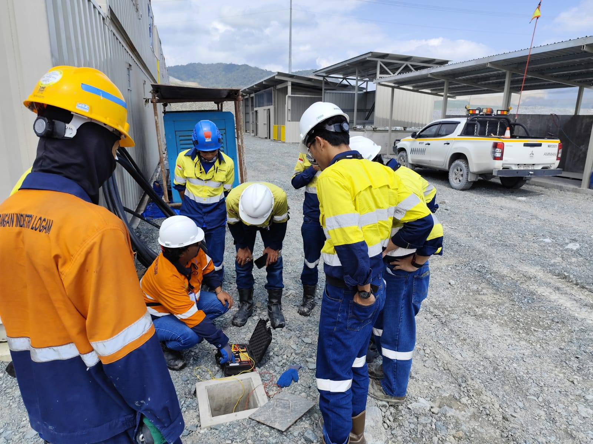
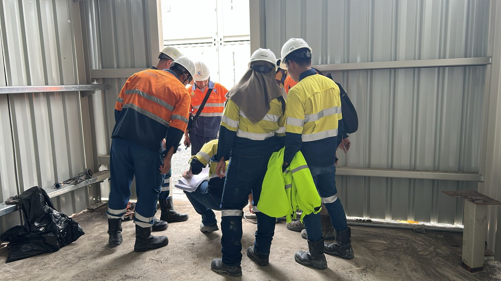

Operasional Tambang
Aktivitas Penunjang Pertambangan & Penggalian
Jasa berbasis kontrak untuk aktivitas penunjang lapangan seperti pemompaan, penanganan material, penyaluran hasil tambang, dan uji kelayakan eksplorasi.
Mendukung kelancaran operasional industri pertambangan, penggalian, dan ketenagakerjaan melalui layanan berbasis kontrak yang terstandarisasi, aman, dan patuh regulasi nasional.

PT Karya Satya Buana Indonesia berfokus pada penyediaan jasa penunjang pertambangan serta pengelolaan sumber daya manusia yang siap mendukung produktivitas perusahaan mitra secara aman dan berkelanjutan.
Menjunjung tinggi transparansi, kepatuhan legalitas hukum ketenagakerjaan, dan kejujuran dalam setiap kesepakatan kemitraan.
Didukung tim ahli yang memiliki pengalaman teknis dan pemahaman mendalam tentang tata kelola lapangan dan standar K3 industri.
Membangun kolaborasi jangka panjang dengan klien melalui peningkatan kompetensi SDM dan efisiensi operasional terukur.

Tim lapangan kami secara berkala melaksanakan walkdown dan inspeksi komprehensif pada gedung pendukung fasilitas industri guna memastikan kepatuhan standar keselamatan kerja, integritas struktur, dan kesiapan operasional tanpa henti.
Solusi berbasis kontrak yang dirancang spesifik untuk menjawab tantangan operasional pertambangan dan kebutuhan tenaga kerja industri modern.
Jasa berbasis kontrak untuk aktivitas penunjang lapangan seperti pemompaan, penanganan material, penyaluran hasil tambang, dan uji kelayakan eksplorasi.
Penyediaan tenaga kerja terampil, teknisi bersertifikasi, operator, dan personel penunjang yang siap diterjunkan sesuai kualifikasi teknis proyek Anda.
Layanan pengelolaan administrasi ketenagakerjaan, sistem kepatuhan hubungan industrial, pengawasan kedisiplinan kerja, dan manajemen kontrak personel.
Dukungan teknis berkala, inspeksi fasilitas penunjang, dan pemeliharaan sarana kerja guna mencegah hambatan operasional di tapak proyek.
Pelaksanaan inspeksi keselamatan kerja, joint inspection tahanan pembumian (earthing resistance test), dan audit kepatuhan fasilitas kerja.
Pendampingan komprehensif mulai dari perencanaan kebutuhan operasional, tata kelola kepatuhan K3, hingga evaluasi efisiensi kemitraan jangka panjang.
Kepemimpinan terarah dengan rekam jejak industri solid, didukung divisi manajerial fungsional yang memastikan kepatuhan regulasi hukum, keselamatan kerja K3, serta akuntabilitas finansial proyek.
Memimpin arah strategis korporasi, kemitraan bisnis industri pertambangan, dan integrasi operasional seluruh unit kerja di PT Karya Satya Buana Indonesia.
Menjalankan fungsi pengawasan independen terhadap kebijakan direksi, penerapan Good Corporate Governance, kepatuhan audit, dan mitigasi risiko strategis.
Tiga pilar divisi di bawah koordinasi operasional General Manager untuk memastikan keandalan eksekusi proyek tapak industri.
Dipimpin oleh Head of HR didukung Assistant HR dan staf personalia lapangan.
Dipimpin oleh Legal Team didukung Statistics Staff dan kepatuhan perizinan.
Dipimpin oleh Head of Finance didukung Assistant Finance dan staf akuntansi.
Dokumentasi otentik kegiatan pengujian kelistrikan, inspeksi struktur, perakitan perancah mekanikal, stasiun pompa slurry, dan penerapan standar K3 di site industri Sumbawa Barat.
 Uji Kelistrikan & K3
Uji Kelistrikan & K3
Pengujian resistansi pembumian sistem kelistrikan terpadu pada fasilitas industri untuk memastikan perlindungan optimal terhadap lonjakan arus.
 Inspeksi Fasilitas
Inspeksi Fasilitas
Pemeriksaan visual berkala bersama tim teknis untuk memverifikasi kekokohan struktur dan kelayakan fasilitas penunjang operasional pabrik.
 Briefing K3 & Safety
Briefing K3 & Safety
Penyampaian pengarahan keselamatan harian dan identifikasi potensi bahaya lapangan sebelum personel memulai pekerjaan operasional.
 Mekanikal & Scaffolding
Mekanikal & Scaffolding
Pemasangan klem pengaman dan rangka perancah modular pada instalasi industri bertingkat tinggi dengan kepatuhan alat pelindung jatuh.
 Pompa & Dewatering
Pompa & Dewatering
Unit pompa slurry sentrifugal dan saluran manifold perpipaan bertekanan tinggi untuk penyaluran fluida dan pengeringan tapak tambang.
 Instrumentasi & Kontrol
Instrumentasi & Kontrol
Pemeriksaan sensor otomatisasi, kalibrasi transduser aliran, dan verifikasi transmisi sinyal data ke pusat kendali operasional.
Diskusikan kebutuhan penunjang pertambangan dan pengadaan tenaga kerja perusahaan Anda bersama tim perwakilan kami.
Kirimkan rincian kebutuhan Anda dan tim kami akan segera merespons dalam waktu 1x24 jam kerja.